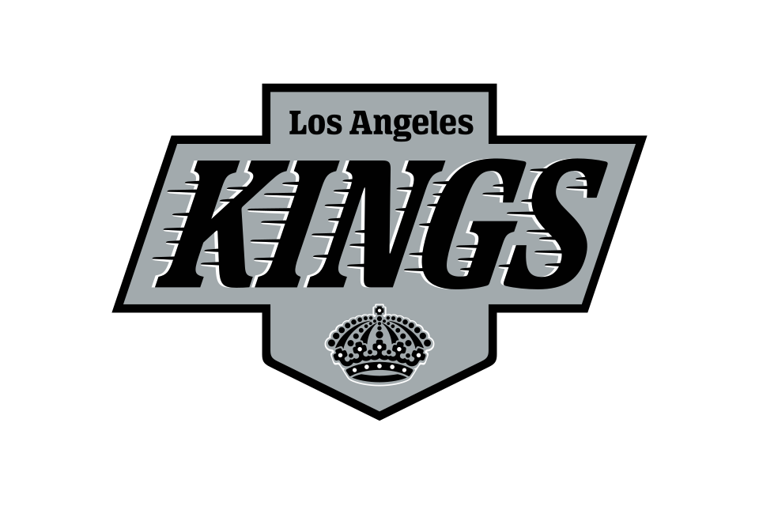

Ottawa GM Scouts Predators' Game Against Penguins
As initially reported by Nick Kieser, Ottawa Senators general manager Steve Staios was in attendance for last night's matchup between the Nashville Predators and Pittsburgh Penguins.


Atlantic · Eastern Conference · 40 headlines in the last 30 days


Kings vs. Senators
 Flyers vs. Senators
Flyers vs. Senators
 Senators vs. Jets
Senators vs. Jets
 Senators vs. Penguins
Senators vs. Penguins
 Avalanche vs. Senators
Avalanche vs. Senators
 Capitals vs. Senators
Capitals vs. SenatorsAs initially reported by Nick Kieser, Ottawa Senators general manager Steve Staios was in attendance for last night's matchup between the Nashville Predators and Pittsburgh Penguins.

The NHL fined the Los Angeles Kings the maximum allowable amount for his cross-check on Saturday night, but the Senators were the ones who ended up shorthanded.

Drake Batherson joked that he would be willing to give Sidney Crosby his house if the Penguins superstar came to the Senators. It's a fun thought, an exciting idea, but there are some pretty big obstacles in the way.

The Senators are rumored to be interested in a few Penguins' veterans.

OTTAWA, Ontario (AP) — Tim Stutzle had a three-point game that included a pair of goals in the third period, leading the Ottawa Senators to a 4-2 win over the Los Angeles Kings on Saturday night.Linus Ullmark made 19 saves in the win.
Tim Stützle scored twice and added an assist, Nick Cousins made an immediate impact in his return, and the Senators bounced back from Thursday's loss to Philadelphia.

Nick Cousins has no hard feelings toward former teammate Jakob Chychrun after a massive hit knocked him unconscious.


The Senators will try and put Thursday's third period meltdown behind them.

On this episode of the Sens Nation Podcast, Samuel Ersson gets shelled by his former team, Tyler Boucher's NHL debut, and playing Grand Theft Audio V apparently led to Craig Anderson's worst season in Ottawa.
The Hurricanes remain atop the list, while the Senators made a big leap.

The Senators allowed just five shots in the third period, but that's all the Flyers needed to rally from a 5-2 deficit in the final 13 minutes.


OTTAWA, Ontario (AP) — Travis Konecny scored 39 seconds into overtime to cap a four-point night, and the Philadelphia Flyers rallied from a 5-2 deficit to beat the Ottawa Senators 6-5 on Thursday night.Cam York had two goals, and Owen Tippett, Tyson Foerster and Jamie Drysdale also scored for the Flyers, who have won…


Sam Ersson gets the start against his former team Thursday night, while Tyler Boucher remains in the lineup after scoring the winning goal in his NHL debut.


WINNIPEG, Manitoba (AP) — Tyler Boucher scored the game-winner in his NHL debut to lift the Ottawa Senators to a 2-1 victory over the Winnipeg Jets on Tuesday night.Boucher’s second-period goal helped the Senators (14-6-2) extend their point streak to six games (5-0-1) and halted Winnipeg’s six-game win streak.


In his NHL debut, the 2021 first-round pick scored on his first career shot to help the Senators end the Winnipeg Jets' six game winning streak.

Linus Ullmark’s stellar goaltending and Tyler Boucher’s debut marker silenced a raucous Winnipeg crowd, halting the Jets' dominant run despite Viggo Bjorck finally finding the back of the net.
After five injury-plagued seasons, the Senators' 2021 first-round pick is expected to make his NHL debut Tuesday night in Winnipeg.

Sign No. 10,000 that it’s going to be a long, harsh winter for the Penguins was on display last night. After the team returned from a successful trip to California and winning two games, Pittsburgh managed all of 17 shots last night against Ottawa. I think this was a tighter game,“ Sidney Crosby said, “a […]

The Penguins dropped a 4-1 game to the Ottawa Senators. z

Two egregious turnovers by the Penguins led to two goals against and yet another loss.

According to Sportsnet's Elliotte Friedman, the Senators are exploring trade options for the struggling winger.


Michael Amadio led the way with a goal and an assist as the Senators defeated the Penguins, 4-1 on Saturday night.

After being a healthy scratch in six of the last seven games, 21-year-old rookie Carter Yakemchuk will draw back into the Sens' lineup in Pittsburgh.

The Senators look to build on a strong stretch that has seen them grab seven of a possible eight points as they face an aging Penguins team struggling to find its footing.

The Penguins will attempt to put aside their recent struggles against the Senators Saturday.

Who: Ottawa Senators (12-6-2, 26 points, 4th place Atlantic Division) @ Pittsburgh Penguins (7-10-2, 16 points, 6th place Metropolitan Division) When: 7:00 p.m. ET How to Watch: Locally televised game on Sportsnet Pittsburgh and SN1/TVAS2, streaming for out of market at ESPN+ Pens’ Path Ahead: The Penguins have four…

Shane Pinto celebrated his birthday by bookending a resilient OT win over Colorado on Thursday night.
Ottawa Senators (12-6-2, in the Atlantic Division) vs. Pittsburgh Penguins (7-10-2, in the Metropolitan Division)Pittsburgh; Saturday, 7 p.

To panic or not to panic, that is the question.